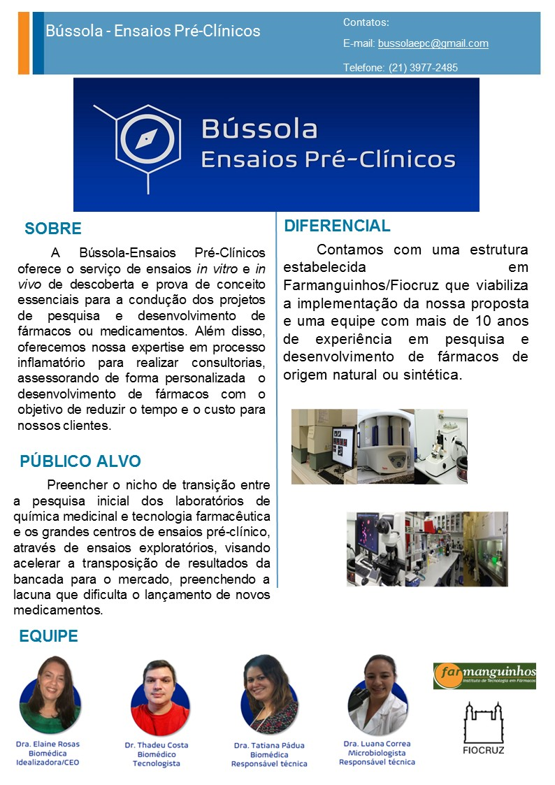

ATIVIDADES
PESQUISAS E PROJETOS
Parcerias formalizadas:
- REDE- NanoSaúde-FAPERJ - Consolidação de rede multidisciplinar (NanoSaúde) para o desenvolvimento
translacional de produtos nanoestruturados para o diagnóstico, tratamento de tumores, traumas e doenças
degenerativas
- Grupo de Pesquisa CNPq: Sistemas avançados de liberação de fármacos; Líder do grupo: Helvécio Vinícius
Antunes Rocha – link: dgp.cnpq.br/dgp/espelhogrupo/8598452129413753
- Grupo de Pesquisa CNPq: Pesquisa, desenvolvimento, e metodologias interdisciplinares para a inovação
químico-farmacêutica de processos e produtos da diversidade vegetal; Líder do grupo: Antonio Carlos
Siani – Link; dgp.cnpq.br/dgp/espelhogrupo/5244501200113202
- Grupo de Pesquisa CNPq: Produtos Naturais Bioativos de Plantas; Líder do grupo: Maria Raquel
Figueiredo - dgp.cnpq.br/dgp/espelhogrupo/4183786409382458
Parcerias formalizadas:
- Instituto Oswaldo Cruz/Fiocruz
- Escola Politécnica de Saúde Joaquim Venâncio/Fiocruz
- Fiocruz Bahia
- Fiocruz Brasília
- Instituto Vital Brasil
- Instituto de Pesquisas do Jardim Botânico
- Embrapa
- Centroflora
Principais atividades realizadas:
Parcerias formalizadas:
- Instituto Oswaldo Cruz/Fiocruz
- Centro de Pesquisa Gonçalo Moniz/Fiocruz
- Universidade Federal do Rio de Janeiro
- Universidade do Estado do Rio de Janeiro
- Universidade Federal Rural do Rio de Janeiro
- Universidade Federal Fluminense
- Universidade Federal de Juiz de Fora
- Universidade Federal de Pernambuco
- Inovet Rio - Industria E Comercio De Produtos Veterinários Ltda
Apoio à pesquisa
Além dos laboratórios credenciados, a VDEPI conta com as seguintes estruturas:
- Núcleo de Farmacocinética
- Pesquisador responsável – Filipe Quirino da Silva
- Serviço de Biotério
- Pesquisador responsável: Elaine Cruz Rosas
- Seção de Farmacologia Molecular
- Pesquisador responsável: André Luiz Franco Sampaio
- Seção de Análise e Identificação de Compostos com Potencial Terapêutico
- Pesquisador Responsável: Eduardo Gomes Rodrigues de Sousa
Parcerias formalizadas:
SENAI CETIQT - Instituto SENAI de Inovação em Biossintéticos e Fibras https://youtu.be/QyiMUl7dl7Y?si=3sUr9qtE-k-_mkc0
Atividades de extensão:
Participação em feiras de ciências, atividades culturais (ciência e arte), atividades em escolas de
ensino básico etc. Acolhimento de alunos do Programa de Vocação Científica (PROVOC) da Fiocruz e
atividades de divulgação científica em escolas de ensino básico e médio.
Linha 1: Novas metodologias sintéticas utilizando o ultrassom
Objetivo: Desenvolvimento de novas metodologias sintéticas utilizando ultrassom
visando a aceleração e ou favorecimento na síntese de blocos de construção em aumento
de escala e moléculas biologicamente ativas.
1 - Projeto: Utilização do ultrassom na síntese de moléculas biologicamente ativas
Descrição: O objetivo deste projeto é a utilização do ultrassom na aceleração e ou
favorecimento na síntese de blocos de construção em aumento de escala e moléculas
biologicamente ativas.
2 - Projeto: Síntese de derivados de ácidos acrílicos em escala multigrama por
irradiação de ultrassom
Descrição: Derivados de ácidos acrílicos são amplamente utilizadas no
desenvolvimento de novas moléculas bioativas contra diversas doenças, tais como:
tuberculose, malária e câncer. Devido à importância desse building block, o objetivo
deste projeto é o desenvolvimento de uma metodologia rápida, em escala multigrama
para a síntese de alguns derivados de ácidos acrílicos por irradiação de ultrassom.
Linha 2: Síntese de análogos baseados em compostos utilizados no tratamento da
malária
Objetivo: Obter uma biblioteca de substâncias derivados do fármaco mefloquina e
outros análogos quinolínicos, que serão avaliadas quanto a sua atuação no combate à
malária.
1 - Projeto: Síntese e aumento de escala de intermediários chaves polifuncionalizados
e suas aplicações na química medicinal
Descrição: Universal (428920/2018-7) Devido à extrema importância dos blocos de
construção em química medicinal, esse projeto, irá utilizar diferentes blocos de
construção polifuncionalizados que, serão utilizados por nosso grupo de pesquisa na
preparação de diferentes substâncias as quais, serão avaliadas frente a diferentes
tipos de doenças, em especial as comumente conhecidas como doenças
negligenciadas. A preparação dos blocos de construção e as substâncias líderes de
cada classe irão ser preparadas em aumento de escala.
Linha 3: Novos compostos no combate à Tuberculose
Objetivo: Devido à importância da tuberculose no cenário da saúde pública mundial,
necessita-se com urgência de novos fármacos mais potentes, de baixo custo, com
menores efeitos colaterais e com reduzido tempo da terapia. Desta forma o objetivo
desse trabalho é, a partir de grupos farmacofóricos reconhecidamente ativos contra o
Mycobacterium tuberculosis, obter uma biblioteca de substâncias, que serão avaliadas
quanto a sua atuação no combate à tuberculose.
1 - Projeto: Síntese e avaliação antimicobacteriana de derivados benzotiazólicos,
benzoimidazólicos e seus análogos estruturais
Descrição: O objetivo deste projeto é a síntese e a avaliação antimicobacteriana de
diversos derivados benzotiazólicos, benzimidazólicos e seus análogos estruturais. O
planejamento das séries de substâncias foi baseado em um número reduzido de
etapas e com materiais de partida facilmente disponíveis e de baixo custo.
2 - Projeto: Síntese e aumento de escala de building-blocks quinolínicos
intermediários-chave na busca por novas moléculas com atividade contra a
tuberculose
Descrição: PROEP-FAR II (44004/2022-5). O presente projeto visa à obtenção em
escala multigrama de building blocks quinolínicos de interesse para o grupo na busca
por novas moléculas com potencial atividade contra a tuberculose. Os building
blocks propostos neste projeto são derivados do núcleo 7-cloroquinolina, com
múltiplos padrões de substituição na posição C-6, e funcionalizados nas posições C-4
e/ou C-2.
3 - Projeto: Síntese e avaliação tuberculostática de substâncias baseadas no fármaco
mefloquina
Descrição: Cientista do Nosso Estado (E-26/201.187/2021) A proposta deste projeto
é baseada no fármaco mefloquina, a partir do planejamento e síntese de uma
biblioteca de substâncias quinolínicas funcionalizadas na posição C-4 que serão
avaliadas quanto a sua atuação no combate à tuberculose. Esta funcionalização foi
baseada na substância etilenodiamina, que é o grupo farmacofórico do fármaco
etambutol, utilizado no tratamento de primeira escolha contra a tuberculose, além de
seus respectivos 1,2-aminoálcoois e derivados. Isto permitirá estabelecer um estudo
de relação estrutura-atividade que auxiliará na identificação do seu mecanismo de
ação e na escolha de uma substância para estudos in vivo.
4- Projeto: Planejamento, síntese e avaliação biológica de derivados da cânfora
Descrição: Na área da química medicinal, estudos revelaram que a cânfora possui
uma diversidade de atividades biológicas, atuando como antiviral, antimicrobiano,
antitussígeno e como analgésico. Assim sendo, o objetivo geral deste projeto consiste
na síntese em escala de multigramas utilizando a cânfora como material de partida,
obtendo building-blocks, como a nitroimina da cânfora, utilizando o intermediário
chave canfeceno que será transformado em um mesilato imino álcool da cânfora,
todo esse processo sintético até o mesilato ocorrerá em escala multigramas. A partir
do mesilato imino-alcool da cânfora será sintetizado novos derivados da cânfora,
reagindo com aminas primárias, secundárias e disubstituidas.
Linha 4: Novos compostos no combate a Leishmaniose
Objetivo: Obter intermediários chaves polifuncionalizados de diferentes classes
químicas e seus derivados em escala multigrama, que serão avaliadas quanto a sua
atuação no combate à Leishmaniose.
1- Projeto: Síntese e aumento de escala de intermediários chaves polifuncionalizados
e suas aplicações na química medicinal
Descrição: A obtenção de intermediários sintéticos chaves polifuncionalizados em
escala otimizada, vem a ser uma estratégia fundamental para se obter diversos
compostos de fundamental importância para estudos de suas propriedades
farmacológicas. Tal estratégia permite o alcance de uma variabilidade de moléculas
estruturalmente diversificadas, facilitando o estudo de relação estrutura atividade e a
obtenção de um protótipo. Ademais, tal estratégia possibilita, para um dado produto
promissor, a obtenção de quantidade de massa necessária para eventuais ensaios mais
avançados in vivo e pré-clínico, bem como antecipa alguns parâmetros que viabiliza
sua possível produção em escala otimizada. Neste contexto, o presente trabalho visa
a obtenção em escala de multigramas de intermediários chaves (building blocks) de
diferentes classes químicas, e seus derivados, com o fim de se obter potenciais
substâncias bioativas que tenham propriedades farmacológicas de interesse, tais
como leishmanicida.
Linha 5: Novos compostos para o tratamento do câncer
Objetivo: Obter uma biblioteca de substâncias derivadas do núcleo quinoxalínico e
substâncias contendo selenoheterociclos do fármaco mefloquina e outros análogos
quinolínicos, que serão avaliadas quanto a sua atuação no combate à malária.
1- Projeto: Síntese de derivados quinoxalínicos com potencial atividade antitumoral
Descrição: Este projeto tem como objetivo o desenvolvimento de novas séries de
derivados quinoxalínicos como promissores agentes antitumorais. Com ênfase na
síntese e avaliação farmacológica, exploramos o potencial antitumoral do núcleo
quinoxalínico, respaldando-nos nos resultados prévios do grupo, que evidenciaram
notável atividade antitumoral dos derivados quinoxalinil-hidrazônicos. Dessa forma,
a abordagem deste projeto compreende a síntese de novas séries de derivados
quinoxalínicos, visando ampliar a diversidade de compostos que contenham esse
núcleo. Com isso, a finalidade é aprofundar a compreensão da atividade
biológica desses compostos e contribuir para avanços significativos no campo da
pesquisa de agentes antitumorais.
2- Projeto: Síntese e avaliação biológica de selenoheterociclos como potenciais
agentes antitumorais.
Descrição: Nos últimos anos várias estruturas contendo os núcleos oxazol e tiazol
tem sido reportadas como potenciais agentes anticâncer. Alguns estudos também
tem reportado que a substituição do átomo de enxofre por seu isóstero selênio em
diversas moléculas resulta em um aumento da atividade biológica dessas estruturas.
Assim sendo, os objetivos específicos deste projeto são a síntese de compostos
contendo selenoheterociclos, incluindo os selenoazois que serão avaliados frente a
diferentes linhagens de células cancerosas além do estudo da relação estrutura-
atividade dessas substâncias.
-
Principais atividades de extensão:
- Bússola Ensaios Pré-Clínicos – Inovalabs - IV Rodada

- Dado Científico

- Principais atividades realizadas:
- iLabthon/ Rede Conexão Inovação Pública RJ. Dado Científico - Janeiro/2021;
- Série de entrevistas e lives com Mulheres e meninas nas Ciência - Fevereiro/2021;
- Apresentação oral -seção “Early Career Researcher Forum”- Comunicação Científica nas redes sociais
com o Dado Científico - VI Brazilian Meeting on Research Integrity, Science and Publication Ethics (VI
BRISPE); Informações disponíveis em: https://www.vibrispe2020.com/program - Outubro/2021;
-
Jogos Desenvolvidos:
- Semana Nacional da Ciência e Tecnologia (SNCT) da FIOCRUZ – Outubro de 2021
Farmanji- uso racional de medicamentos - SNCT/ Fiocruz; Informações disponíveis em: https://portal.fiocruz.br/noticia/conheca-farmanji-o-jogo-de-tabuleiro-virtual-de-farmanguinhos.
-
Sociedade Brasileira para o Progresso da Ciência (SBPC) – Julho de 2022
-
Semana Nacional da Ciência e Tecnologia (SNCT) da FIOCRUZ – Outubro de 2022
- Laboratório das Cores- SNCT/Fiocruz;
- Conhecendo as cientistas - SNCT/Fiocruz;
- Jogo da Transparência - Feira de Ciências EPSJV/ Fiocruz;
-
Parcerias formalizadas:
REDE- NanoSaúde-FAPERJ - Consolidação de rede multidisciplinar (NanoSaúde) para o desenvolvimento
translacional de nanoprodutos para o diagnóstico, tratamento de tumores, traumas e doenças degenerativas
.png)